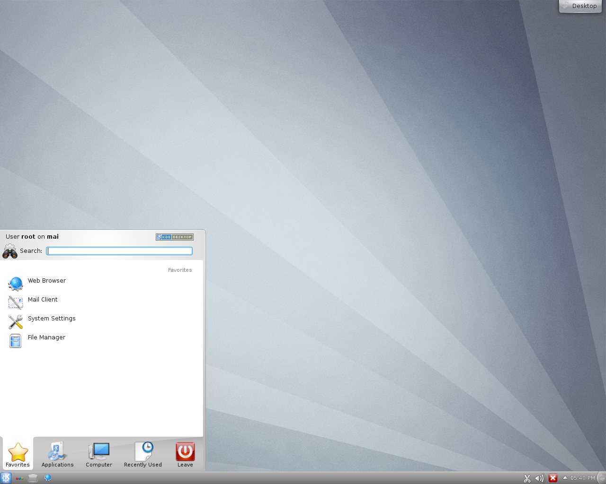

2.2.1 - What do I need?
Choosing a Linux distribution may seem like a daunting task. In fact, there are hundreds of distributions out there; dozens of them worthy contenders for most computers. However the ability to choose between them has improved remarkably in recent years.
Ask any Linux user "What distro should I use?" and the answer will most likely be "go with what you need." Every distribution has their strong points and their weak points. To begin, make a list (mental or otherwise) of what you seek to accomplish with your comptuer:
- What will I work on with this computer? If this is primarily to be an internet and office work machine, most any distribution can do that with relatively little configuration. However more advanced programs will require distributions with better codebases and well-maintained repositories.
- What is my skill level? Those who are just starting Linux for the first time will most likely want to choose a more "simple" distribution. And there are plenty of them: built for ease of use, compatibility and clean user environments right off the bat. For those who are looking for a challenge, and would like to customize their system for power and speed, an "advanced" distro might be more to their liking.
- How much do I want to configure my visual interface? Linux has no shortage of decent graphical environments, known as "Desktop Environments" and "Window Managers." The distribution you choose will largely depend on which graphical environment suits you. Many of the newer, more simple distributions like Ubuntu and Linux Mint, have specific editions depending on the environment you want to use. In any Linux distribution there is the freedom to set your own DE/WM; however if one prefers XFCE for example, they are better off downloading Xubuntu over the standard Ubuntu distribution.
2.2.2 - The Distros
This is by no means an exhaustive list of Linux distros; only a list highlighting the most popular choices. For a more detailed list and comparison, visit
Distrowatch.
The distros here are listed by their general ease-of-use and ease of install; Ubuntu being the easiest and Slackware/Arch the most difficult. The inverse is true for the amount of say you have in packages installed by default: Arch/Slackware are most customizable in this regard, while Ubuntu is the most restricted.
Ubuntu

Linux Mint

Fedora

Arch Linux

Slackware

2.2.3 - Conclusion
This guide will provide instruction on installing and configuring two of the aforementioned distributions: Ubuntu and Arch Linux.

The Carte Blanche Guides by Jacob Cook are licensed under a Creative Commons Attribution-ShareAlike 3.0 Unported License.